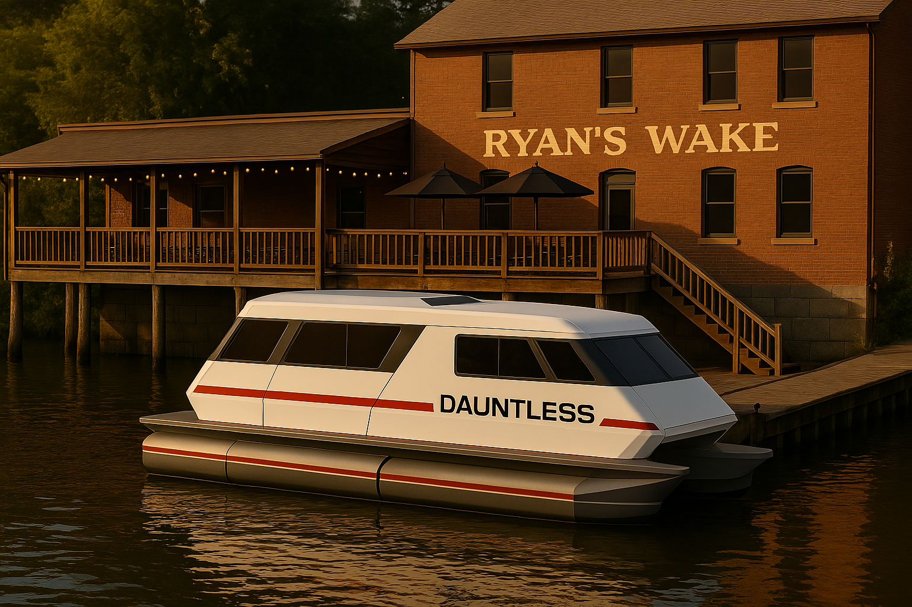

TROY BOAT RAMP – EARLY MORNING
A pale mist drifts off the Hudson as the sun peeks over the Troy skyline. Dauntless—gleaming white hull, stubby electric pods and a fold-out solar array—perches on her trailer beside the ramp. Vanessa, Wayne and Spyder move with purpose: clipping safety tethers, running cable checks, securing belay lines.
VANESSA (locking the bow eye): "Tubes firm, deck stowage clear. Thrusters?"
WAYNE (tapping each joystick): "Port, starboard, bow, stern—green. Touch-and-go tested."
SPYDER (zipping up Fred's transit case): "ROV's charged, comms locked. No leaks, no missing bolts—trial run ready."
They back the trailer down the ramp. With a soft hiss, Dauntless slides free. Spyder vaults aboard with his toolkit; Vanessa and Wayne unclip the stern lines, then give a thumbs up to Wayne.
WAYNE says "Trailer's clear. Here we go!"
DAUNTLESS – BRIDGE: Vanessa settles between the dual joysticks. Wayne monitors a touchscreen thrust slider; Spyder watches the sonar and depth readouts.
SPYDER reports "Depth's six feet. Currents under half a knot."
VANESSA smiles and adds "Perfect. Five miles downstream to Ryan's Wake—fat Reubens and cold lagers await."
Wayne nudges both joysticks. Four pods whisper to life; Dauntless eases into the river, her clean wake fanning out.
HUDSON RIVER – MORNING.
Golden light shimmers on ripples. Maples and sycamores drift by; a tow barge rumbles upriver, its horn echoing off the bluffs. A lone kayaker waves. Dauntless threads past shoal buoys with unruffled poise.
WAYNE (glancing at his watch): "Seven-and-a-half knots—forty minutes to lunch."
SPYDER agrees "Good warm-up for the pontoons."
VANESSA likes to have the last word, "No surprises so far. Today we celebrate."
RYAN'S WAKE RIVERSIDE PATIO – LATE MORNING.

Strings of amber café lights sway over weathered picnic tables. The tavern's red shingles glow; inside, a cast-iron stove breathes warmth. Barge horns, cobblestone bicycle clacks and distant Amtrak rumble in the air. They tie off Dauntless to a battered piling, coil lines, then climb the dock's creaking planks to the patio.WAITRESS strolls up and pleasantly asks "What can I get you folks?"
SPYDER already knows why he's here "Three Reubens, three lagers, and whatever pie you're pushing today."
WAITRESS rsplies "Coming right up!"
A few minutes later, the watress returns with three frosted mugs and plates.
SPYDER (admiring his sandwich): "Marbled rye, house-cured corned beef, ruby kraut—you're welcome."
WAYNE (snapping a bite) "Best Reuben north of Albany. Thousand Island nailed."
A stray dog snakes between benches; Vanessa strokes its head.
VANESSA (leaning back): "Solid sandwich. But the real test is upstream."
At the railing, a battered dinghy motors by. Its pilot, straw bucket hat tipped back, waves a six-pack.
DINGHY PILOT: "Catch you at Bob's Bar! Lock's tomorrow!"
SPYDER frowns at his tablet. "Wait—you can skip locks and rejoin later?"
VANESSA points upriver to a rocky chute by the bank, pale and shallow "Canal's like a road—if you don't need that elevation, you portage. That chute? Under a foot deep. Only kayaks attempt it. Everything else uses the locks."
WAYNE pulls up their route on the world map "Lock 1's gone. It's called Troy Federal now. First numbered lock's E-2 at Waterford. We'll push north on the Hudson, punch through the Waterford Flight (E-2 through E-6), then west on the Erie to Lock 7 at Mechanicville."
They settle their tab, climb back down to the dock. Dauntless awaits, solar panels gleaming.
SPYDER (raising his watch to his mouth): "Athena—status report."
ATHENA's calm British accent pipes over DAUNTLESS – COCKPIT SPEAKERS "All systems green. First lock is Troy Federal, Next lock: Waterford Flight, Locks E-2 to E-6. Volunteer lockmaster on duty tomorrow at E-2. ETA: forty minutes at current speed."
Back on DAUNTLESS DECK; Vanessa steps aboard, Wayne hauls up his toolbox, Spyder taps the touchscreen.
SPYDER announces "Hudson, north to my bike at Bill's house, then Waterford, then Erie Canal westbound. Let’s see what offbeat quirks those volunteers have in store."
The electric pods hum as Dauntless slips into the current. Behind them, Troy’s skyline glows in late-daylight.
VANESSA (speaks over her shoulder) "Great Loop, here we come"
They ease north—anchored by real-world quirks, off-beat detours, and the first whisper of canal side legend a waiting just ahead.
First detour: The Harley “Drive-On” at Bill's dock/ramp
1. Unfurling the Stern Ramp • Spyder lowers Dauntless aft hatch. Pneumatic struts swing the transom deck up, and a stainless-steel ramp drops to the concrete slip. Beneath, the I-beam–reinforced subframe waits, built for exactly this.
2. Punch-It Launch • With the thrusters off, Spyder hands Nessie the kill-switch lanyard, then thumbs the Harley’s throttle hard. The front wheel darts onto the non-skid ramp, tires squirm for a heartbeat… • …then he slams on both brakes, halting the bike dead centre on deck in one clean burst.
3. Lightning-Quick Secure • Nessie vaults aboard, steadies the bars. Spyder eases the bike into the custom front chock and snaps it down on its stout kickstand. • Four ratchet straps clip to deck-mounted D-rings—two on the fork legs, two on the rear loops—and are cinched tight in under thirty seconds.
4. Ready for Anything • Ramp folds, hatch latches, and the Dauntless profile is back to sleek. • Spyder loosens his gloves, rubs his ribs at the echo of the jolt (old reminders of why he built such a beefy deck), then looks to Nessie and nods. “That’ll do.” With the Harley locked and loaded, they pull Dauntless off the ramp. Solar panels hum, gadgets whisper, and the journey—by water and by road—is officially underway.
ATHENA, her calm British accent sounding Drier than usual, if that's even possible, announses, Noted “Vehicle manifest updated. Motorcycle classified as emotional support unit.”